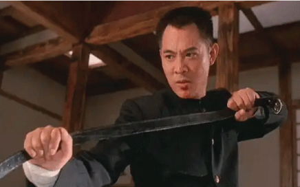

When he was just a boy, Jet Li traveled to the United States with the Chinese National Wushu Team. While there, he and his team performed for the American President, then Richard Nixon. It was then that Nixon tried to make the young martial artist his personal bodyguard. Wushu is the standardized form of Chinese martial arts, created in 1949 to bring all the disparate Chinese arts together. Though relatively young as a sport, the separate forms making up the whole of wushu are much, much older. Li was only 11 when he met President Nixon. Being selected to represent Chinese wushu practitioners was quite the honor for anyone, let alone an 11-year-old boy — considering an estimated 20 million Chinese people practiced the art form. In 1974, Li was good enough to tour the U.S., a tour that culminated with a performance for the President. He performed his routine on the White House's South Lawn as Nixon watched on, standing next to one of Li's female teammates. After his performance, the young man went to stand next to then-Secretary of State, Henry Kissinger.
Next, he was introduced to the President, who was very impressed with his skills. Nixon leaned in to Li and said, "Young man, your kung fu is very impressive! How about being my bodyguard when you grow up?" Li replied, "No, I don't want to protect any individual. When I grow up, I want to defend my one billion Chinese countrymen!" The room was stunned into silence and no one knew what to say until Kissinger said aloud, "Heavens, such a young boy and he already speaks like a diplomat!" The next year, Jet Li began his reign as the national martial arts champion, a title he would hold for five consecutive years. CODE - Angola6